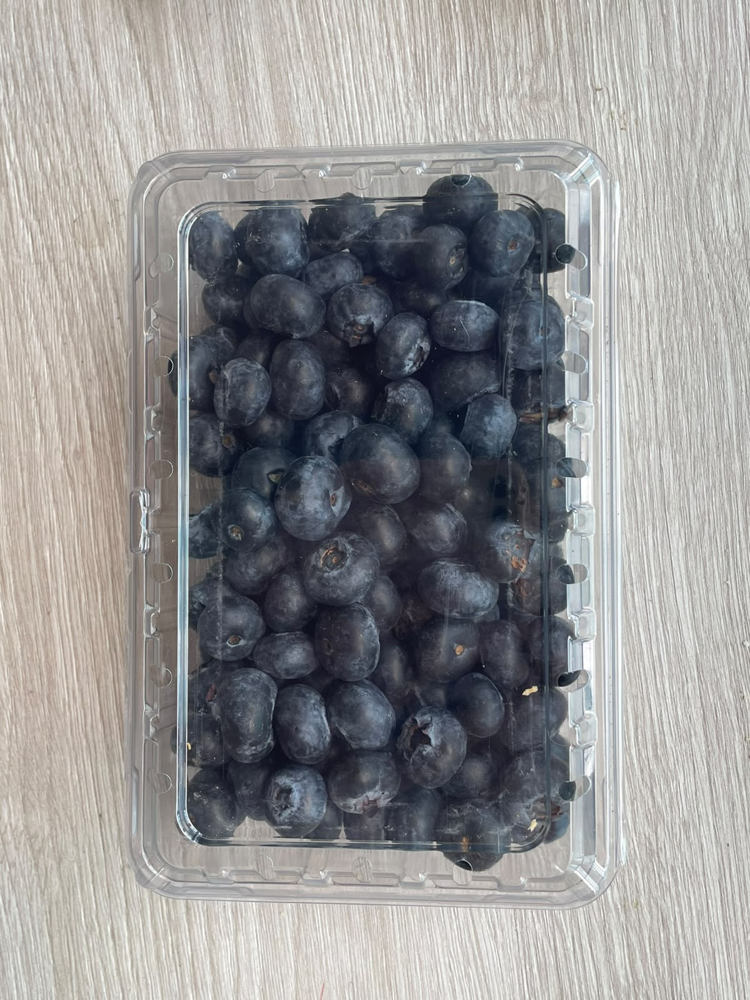

Misión
Cultivar productos agrícolas de la más alta calidad mediante procesos sostenibles, utilizando la tecnología y el marketing digital para conectar directamente con nuestros clientes y entregar la frescura del campo en sus manos.
Campo Azul es un invernadero familiar que cultiva productos frescos y hermosos para nuestro vecindario — y para quienes lo llaman hogar.
Creemos que los mejores alimentos comienzan con atención: al suelo, a las estaciones y a las personas alrededor de la mesa. Por eso cultivamos despacio, con dedicación y cerca de casa.
Cultivar productos agrícolas de la más alta calidad mediante procesos sostenibles, utilizando la tecnología y el marketing digital para conectar directamente con nuestros clientes y entregar la frescura del campo en sus manos.
Liderar la transformación digital en el sector agrícola regional, posicionando a Campo Azul como una marca innovadora, sostenible y digitalmente accesible para todo tipo de consumidor.
Conoce de primera mano cómo se vive Campo Azul y por qué cada cosecha termina siendo parte de algo más grande: la mesa y la comunidad.

20.000 COP
Recorre los cultivos, conoce a quienes los cuidan y llévate una canasta llena de algo bueno. Nos encantará mostrarte el lugar.
Reserva una visita ↗